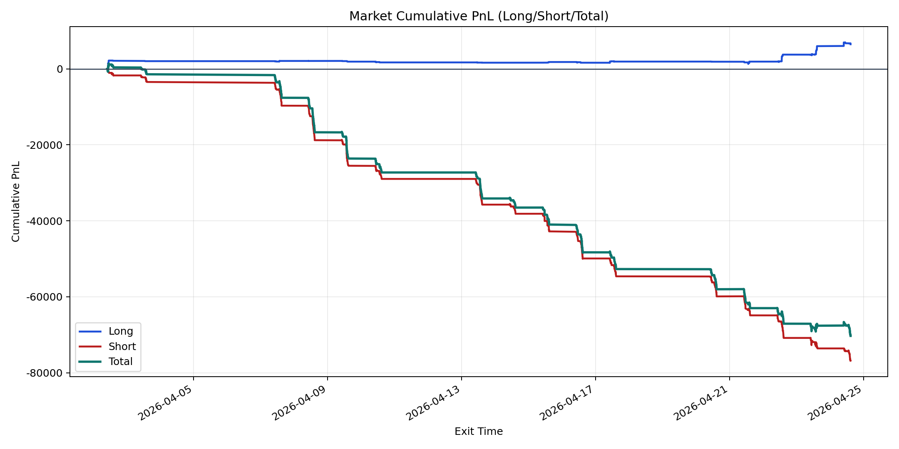
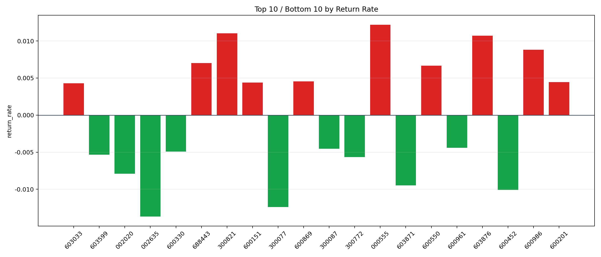

| repo_root | /home/haoranyou/data/output/alpha0.4_1w_5s_3ticks_index_filter/index_weights_1000 |
|---|---|
| period_months | 1 |
| period_label | 2026-04-02_to_2026-04-24 |
| start_time | 2026-04-02 10:06:32 |
| end_time | 2026-04-24 14:45:02 |
| n_trades | 4916 |
| n_symbols | 151 |
| total_pnl | -70290.60155000006 |
| long_total_pnl | 6474.750150000028 |
| short_total_pnl | -76765.3517000001 |
| total_entry_notional | 47082094.0 |
| long_entry_notional | 2890668.0 |
| short_entry_notional | 44191426.0 |
| total_return_rate | -0.0014929370293088507 |
| long_return_rate | 0.002239880245673328 |
| short_return_rate | -0.0017371096307233918 |
| top_symbols_by_return | ["000555", "300821", "603876", "600986", "688443", "600550", "600869", "600201", "600151", "603033"] |
| bottom_symbols_by_return | ["002635", "300077", "600452", "603871", "002020", "300772", "603599", "600330", "300087", "600961"] |

